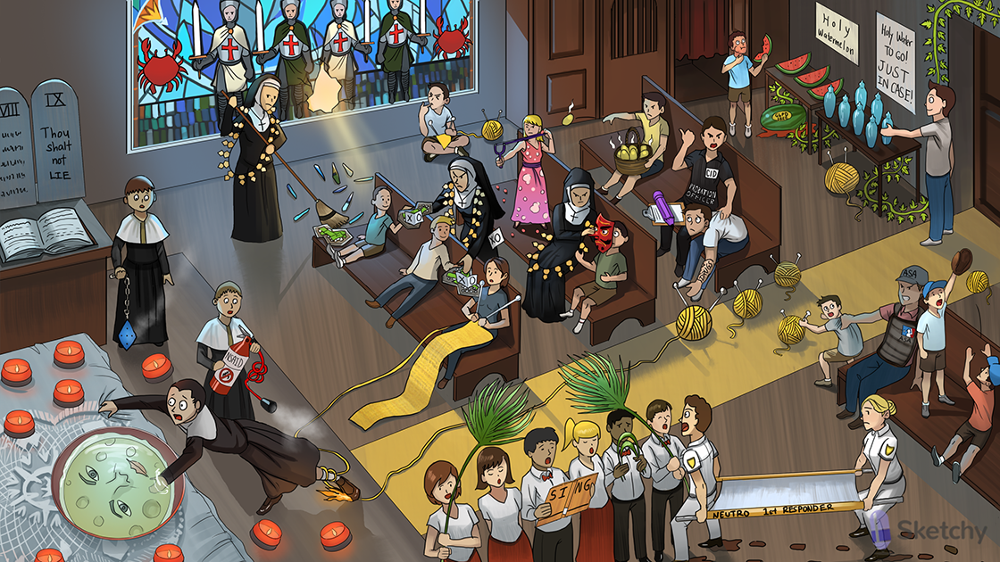

Knitting needles: uric acid crystals
Yellow center aisle: renal tubule
Cid’s purple pencil: probenecid prevents renal excretion of penicillin
Uric acid yarn in the center aisle: uric acid excretion by kidney
Purine-shaped collection plate: purines (purine metabolism produces uric acid)
Small kid passing XO note: hypoxanthine (purines are converted into hypoxanthine)]
XO love letter: xanthine oxidase (converts hypoxanthine to xanthine)
Larger kid passing XO note: xanthine
XO love letter: xanthine oxidase (converts xanthine to uric acid)
Tripping over yarn: acute gout
Fire extinguisher: NSAIDs (e.g. indomethacin) treat acute gout
Moon face: glucocorticoids (e.g. oral prednisone) treat acute gout
Choir sing: colchicine treats acute gout
Spindly palm fronds: spindle apparatus microtubules
Binding palm fronds: colchicine binds intracellular tubulin preventing polymerization of microtubules
First responders blocked by choir: colchicine disrupts the cytoskeleton of neutrophils thereby inhibiting neutrophil migration, phagocytosis, and degranulation
Muddy floor: colchicine can cause diarrhea
Lying: pseudogout (acute treatment is similar to acute gout - NSAIDs, glucocorticoids, colchicine)
Blue-rhomboid incense holder: pseudogout is positively birefringent (blue under polarized light) and forms rhomboid-shaped crystals
Pure nun: allopurinol manages chronic gout
Nun grabbing XO notes: allopurinol inhibits xanthine oxidase
Stopped XO note: febuxostat (chronic gout therapy) inhibits xanthine oxidase
Shattered cancer crab class: uric acid crystals can form in tumor lysis syndrome after starting cytotoxic chemotherapy
White T-cell crusaders: tumor lysis syndrome is most common with treatment of lymphoma and acute lymphoblastic leukemia
Nun sweeping crystals: allopurinol prevent uric acid crystal deposition in setting of tumor lysis syndrome
Needle in flesh: Lesch-Nyhan syndrome (associated with hyperuricemia) is managed with allopurinol
Concentrated purine beads: allopurinol inhibits breakdown of purine analogs (e.g. 6- mercaptopurine and azathioprine) increasing risk of toxicity
Sloughed off red mask: allopurinol can cause Stevens-Johnson syndrome
Eo-slingshot granules: eosinophilia
Eosinophilic dress: allopurinol can cause drug reaction with eosinophilia and systemic symptoms (DRESS syndrome)
Probation officer Cid: probenecid (a uricosuric agent) manages chronic gout
Preventing punk from grabbing yarn: probenecid decreases renal tubular reabsorption of uric acid
Accumulating yarn and needles: probenecid can increase the risk of renal stone formation due to increased uric acid excretion
"Drugs” tattoo: probenecid can inhibit the excretion of many drugs
Rotten sulfa eggs: probenecid is a sulfa drug
ASA umpire: aspirin
Preventing son from grabbing yarn: aspirin at high doses prevents reabsorption of uric acid
Little ASA umpire catching yarn: aspirin at low doses inhibits uric acid excretion
Holy water: pegloticase converts uric acid into water soluble allantoin
“just in case”: pegloticase (recombinant uricase) can be used in chronic gout management
Watermelon with bite: pegloticase can cause hemolysis in G6PD deficiency (bite cells)
Choking kid: pegloticase can cause anaphylaxis
Ivy: pegloticase is administered IV